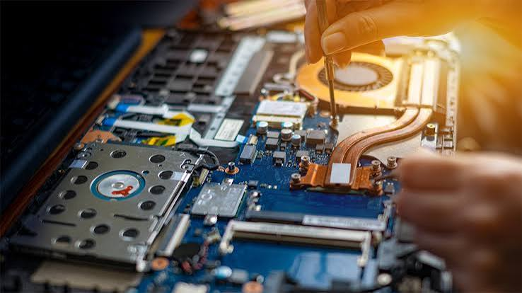

.png)
OUR MISSION
Dependable IT solutions
Provide professional repairs, practical support and quality technology products with care and clear communication.
We help individuals, students and businesses repair, upgrade and secure the technology they rely on.
Get in Touch ↗FUTUREE IT SOLUTIONS is a Thohoyandou-based technology business focused on dependable repairs, practical IT support and quality equipment.
We specialise in laptop motherboard and board-level diagnostics, screen, keyboard and battery replacement, SSD and RAM upgrades, CCTV installation, second-hand laptops and accessories.
We believe customers deserve clear communication, careful diagnostics and practical options before committing to a repair or replacement.

Provide professional repairs, practical support and quality technology products with care and clear communication.
Be a trusted choice for reliable, innovative technology solutions in Thohoyandou and beyond.
We focus on problem-solving, transparent advice, customer service and attention to workmanship.
From complex laptop faults to complete CCTV systems, we help customers choose the right solution.
Based in Thohoyandou, Limpopo.